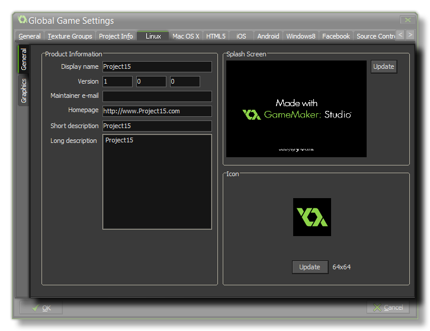
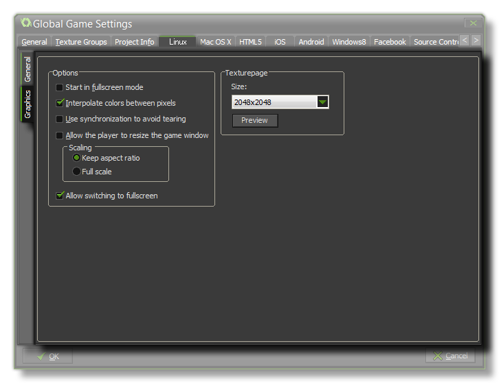

This Ubuntu (Linux) tab is split into two separate sub-tabs (accessible on the left of the window) to make changing and updating the information for your game clearer and less complicated. These tabs are explained in the following sections.
 This tab is where you set the name of your game as it is to be displayed while running, add a splash screen, and set the game icon that will be used. The icon must be a 64x64 pixel image in the *.png format, and the splash screen should be at least the same size as the fist room in your game (or it's view port) and *.png format too. You can also supply a contact email and a description (short and long), as well as a URL for the homepage of the game or the developer.
 The graphics options will determine how your game is displayed when run and affect the way things like scaling and interpolation are handled. The following options exist:
- Start in fullscreen mode - If this is checked, the game will start in fullscreen mode.
- Interpolate colours between pixels - Turns on interpolation, which basically "smooths" pixels. for crisp pixel graphics, it should be off, but if you have nice alpha blends and smoothed edge graphics it is better left on.
- Use synchronization to avoid tearing - This toggles v-sync on or off. Note, that if you have a game with a room speed of 120 and the player has a monitor with a refresh rate of 60, turning this option on will lock your game speed to 60 too.
- Allow the player to resize the game window - Checking this permits the user to change the size of the game window.
- Scaling - Here you can choose to maintain aspect ratio (so a 4:3 room will be "letter boxed" on a 16:9) or to scale fully (stretching the image to fit the full screen).
- Allow switching to fullscreen - Checking this will allow the user to toggle the game from windowed to fullscreen mode using <CTRL> + <CMD> + <F>.
WARNING! Switching off the application surface will
disable all the scaling options set in the Global Game Settings
until it has been switched back on again. See The
Application Surface for further details.
Finally there is the option to set the size of the Texture
Page. The default (and most compatible) size is 2048x2048, but
you can choose from anywhere between 256x256 up to a whopping
8192x8192! There is also a button marked View which will
generate the texture pages for this platform and then open a window
so that you can see how they look. This can be very useful if you
wish to see how the texture pages are structured and to prevent
having texture pages larger (or smaller) than necessary.
NOTE: Be aware that the larger the size of the texture
page, the less compatible your game will be.